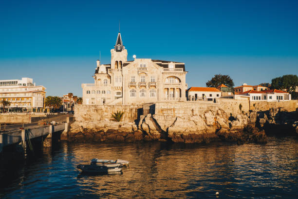
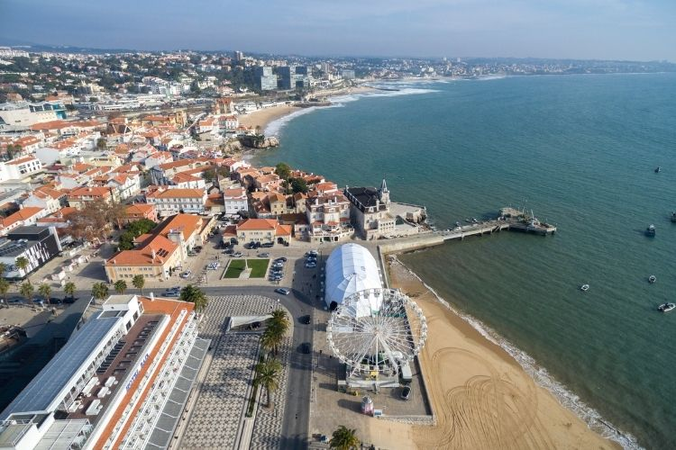
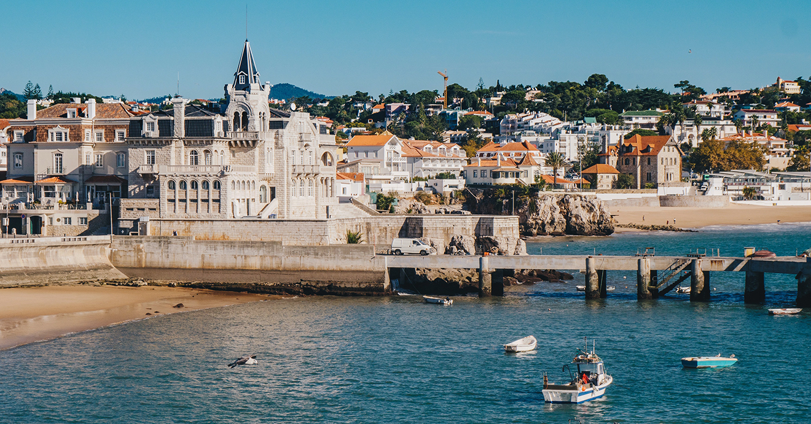
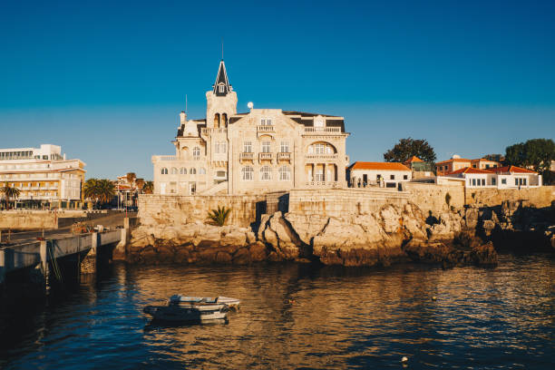
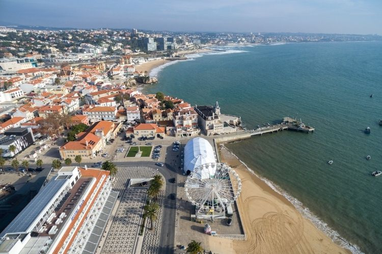
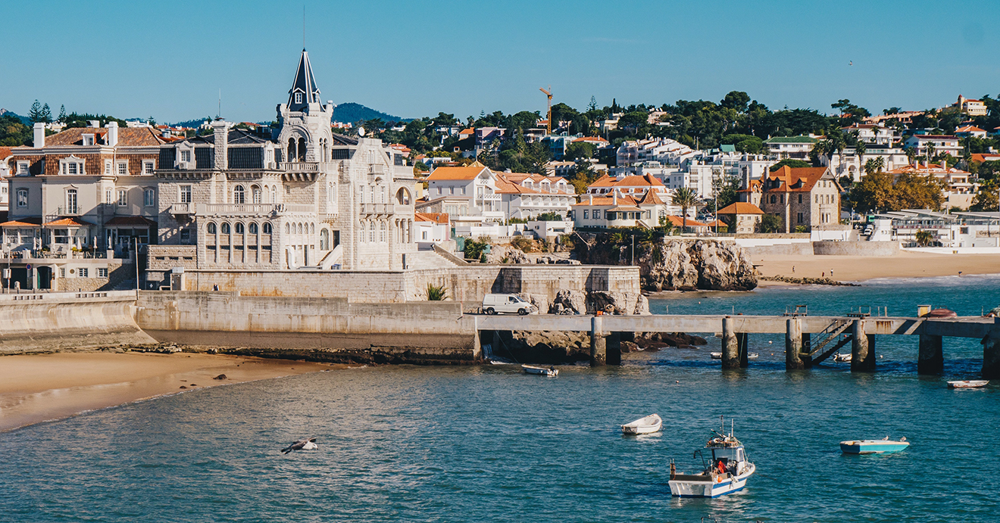

Multimédia
Aqui vão algumas fotos da bela cidade de Cascais, mostrando as suas praias, ruas e paisagens encantadoras.
Galeria de Fotos | Vídeo | Poesia

 






Aqui está um pequeno vídeo que mostra a beleza da cidade de Cascais
Poesia
Nas praias de Cascais o sol desperta,
O vento brinca entre barcos e cais,
Ruas estreitas guardam histórias abertas,
E o mar sussurra segredos ancestrais.
Entre falésias e jardins em flor,
A cidade brilha com calor e cor.